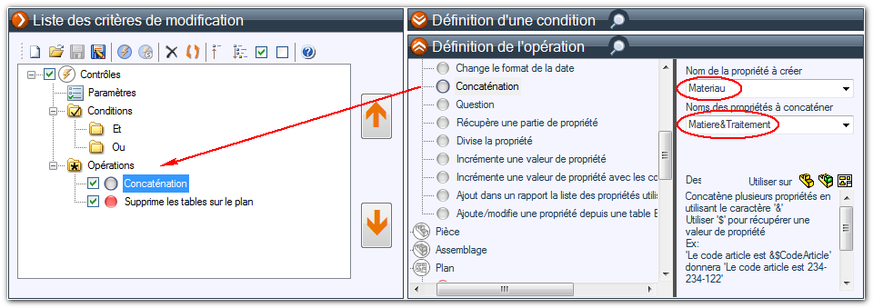
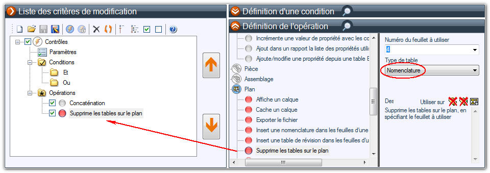

Pour ajouter une opération il suffit de choisir et de faire glisser, depuis la zone "Définition de l'opération", l'opération vers le dossier "Opérations".
Exemple :

Si la ou les conditions définies sont respectées alors les 2 opérations "Concaténation" et "Supprime les tables sur le plan" seront réalisées :
- La propriété "Materiau" sera créée en concaténant les valeurs des propriétés "Matiere" et "Traitement".
Puis :

- Si le document parcouru est une mise en plan la seconde opération supprimera les tables de "Nomenclature" suivant la quatrième feuille.
Un clic droit sur une opération permet d'ouvrir un menu afin de :
- Développer toutes les rubriques des opérations.
- De regrouper toutes les rubriques des opérations.
- De pouvoir copier (dans un fichier Word ou texte) la totalité des opérations avec leur description. Après avoir sélectionné "Copier l'ensemble des opérations" il faut faire un "Coller" (clic droit ou Ctrl+V) dans le fichier.
- En cliquant sur "Ajouter en fin d'arbre des actions" cela placera automatiquement l'opération à la fin de la liste sans passer par un "Glisser/Déposer". C'est pratique lorsque la liste est longue.